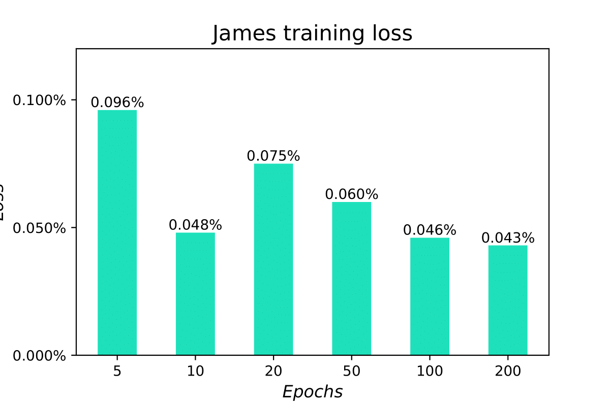

James is the name of a humanoid robot project developed by University of Genoa and Italian Institute of Technology (IIT). The neural network controller for the arm of the robot consists of 8 inputs and 6 outputs: the input consists of two vectors of four elements each, one related to the velocity and the other to the angle of the shoulder and elbow joints. The outputs are the corresponding values of internal forces and torques in a Cartesian space.
The picture below shows the formal representation of the feed-forward neural network for this example. The architecture consists of 3 hidden layers with ReLU activation functions and a decreasing number of neurons, namely 64, 32 and 16.
NeVer2 allows to add sequential layers directly by clicking on the corresponding buttons in the left toolbar. The layer block will be placed in the correct position with default parameters which can be edited directly. Note that adding a layer will block the editing of previous layers to maintain consistency. It is always possible to remove nodes at the end of a network with the "DEL" key. This also applies to the input block, where it is possible to change the input identifier and to set the number of inputs of the network.
The first block is a Fully Connected layer consisting of 64 neurons. To do so, it is sufficient to set the out_features parameter to 64 and to click on Save.
To add the other layers we select the corresponding block in the left toolbar. ReLU activation functions have no parameters and new Fully Connected layers can be added directly. In the example below it is presented the complete network. In this example it is also visible how the last layer computes the output which is then shown in the output block.
Once the parameters are set, clicking "Train Network" runs the training. Logs are printed in a box below the buttons.
The Best Loss Score label indicates the smallest training loss; in this case, with a 10 epoch long training the best loss is 0.00048, corresponding to 0.048%. Looking at the following diagram shows how increasing the training epochs improves slightly the training loss.
